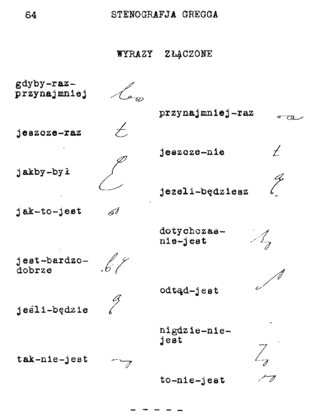

International
InternationalPorady dla adeptów stenografii
2011-06-03 | autor: flamenco108Oto kilka wskazówek dla adeptów stenografii, prosto od najwybitniejszych nauczycieli systemu Gregga, z podręcznika dla instruktorów tej sztuki. To nie jest tłumaczenie, raczej opracowanie na podstawie, gdyż starałem się “unowocześnić” porady i dostosować je do potrzeb współczesnego samouka, który jest przecież dla siebie równocześnie nauczycielem i uczniem:
Zamień pisanie pismem długim na stenografię. Stałe używanie stenografii do celów osobistych jest najlepszą metodą rozwijania umiejętności sprawnego notowania. Uczeń stenografii, który zastosuje metodę we wszystkich codziennych notatkach, listach zakupów, marginaliach, zyska kolejne godziny ćwiczeń i wydatnie skróci czas potrzebny do osiągnięcia biegłości w szybkopisaniu.
Nie naciskaj pisakiem na papier. Jest to jedna z najczęściej spotykanych przyczyn, dla których ktoś nie może się nauczyć szybko pisać. Zbyt silne przyciskanie pisaka do papieru skutkuje szybszym zmęczeniem ręki, bólem mięśni i w efekcie utratą kontroli nad kształtem pisma. Dla opornych remedium na nawyk: owinąć opuszek palca wskazującego kilkoma warstwami opatrunku z gazy - na tyle ściśle, żeby nie przeszkadzał w ruchu, ale żeby zmniejszył czucie w opuszku. Likwidacja nawyku silnego naciskania pisakiem na papier wydatnie zwiększy komfort pisania.
Nie staraj się na siłę dopasować swojego charakteru pisma do wzorców z podręcznika. Choć warto przyłożyć się od samego początku, aby charakter pisma stenograficznego był jak najbardziej wyraźny, oczywiste jest, że jedni wolą znaki bardziej, inni mniej pochylone, większe, lub mniejsze. Jakikolwiek styl pisania jest dobry, pod warunkiem, że stenogram pozostaje czytelny przynajmniej dla jego autora.
Różnicuj zadania w swoich codziennych ćwiczeniach stenografii. Bardzo łatwo codziennie robić to samo. Jeszcze łatwiej jest się tym śmiertelnie znudzić. Monotonia spowalnia naukę, a przecież można zastosować “płodozmian” dla utrzymania świeżości procesu uczenia się.
Ćwicz koncentrację. Psychologowie wiedzą, że przeciętny człowiek z trudnością koncentruje się na jednym obiekcie przez czas dłuższy niż dwie, trzy minuty. Najlepszą metodą ćwiczenia skupienia w stenografii jest pisanie długich, dłuższych niż 5 minut, dyktand z różnymi prędkościami. Można też starać się zapisać stenograficznie cały wykład na uczelni.
Zbieraj słowa w grupy. Prędkość pisania w stenografii bierze się nie tylko ze znaczników i skrótów, ale też z doskonałej znajomości języka. Niektóre słowa występują w pewnych związkach frazeologicznych i przeważnie tylko tam - warto ćwiczyć je oddzielnie. Zobacz, jak szybko możesz zapisywać takie grupy trzech, czterech słów. Warto dążyć do tego, żeby zmieścić się z nimi w jednej sekundzie.

Twórz własne dyktanda. Nagrywaj własne dyktanda z wybranych tekstów i przysyłaj je do nas, zostaną opublikowane dla wspólnego pożytku. Dyktuj wyraźnie i bez emocji. Kiedy później z nich skorzystasz, będziesz się koncentrować nie na intonacji, a na znaczeniu słów, co ułatwi ćwiczenie.
Nie zaniedbuj odczytywania stenogramu. Po każdym zapisaniu stenogramu natychmiast go odczytaj. Niech to się stanie odruchem. Tylko w ten sposób oswoisz się z nowym alfabetem, którego właśnie się uczysz. Szukaj inspiracji i unikaj “przetrenowania”. Dobieraj sobie codzienne ćwiczenia w taki sposób, aby zawsze odczuwać satysfakcję z wypełnionego zadania i pozostawić sobie lekki “głód stenografii” na jutro. Nie obawiaj się, umysł cały czas się uczy. Lepiej codziennie ćwiczyć trochę za krótko, niż co dwa dni zbyt długo.
Szukaj wsparcia i nowych pomysłów. W grupie pracuje się przyjemniej. Lepsi “ciągną” mniej zaawansowanych, podpowiadają sposoby i skróty. Wynajduj interesujące teksty, które zechcesz zapisać. Zapisuj usłyszane w radiu teksty piosenek i dialogi z filmów.
Jak znajdę interesujące porady w innych miejscach, to też je tu wrzucę.
2011-06-03 autor: flamenco108